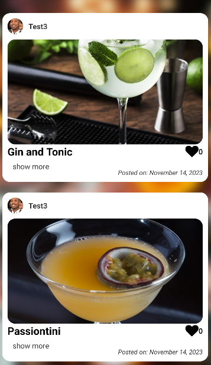
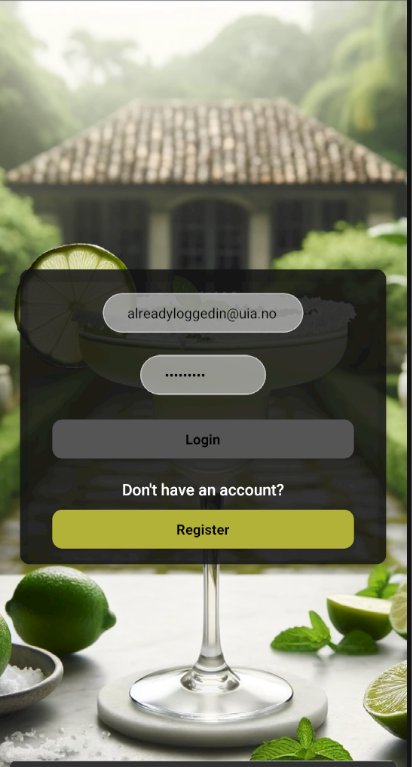
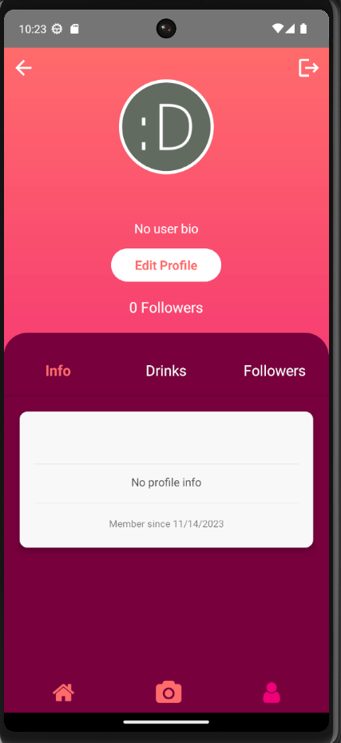
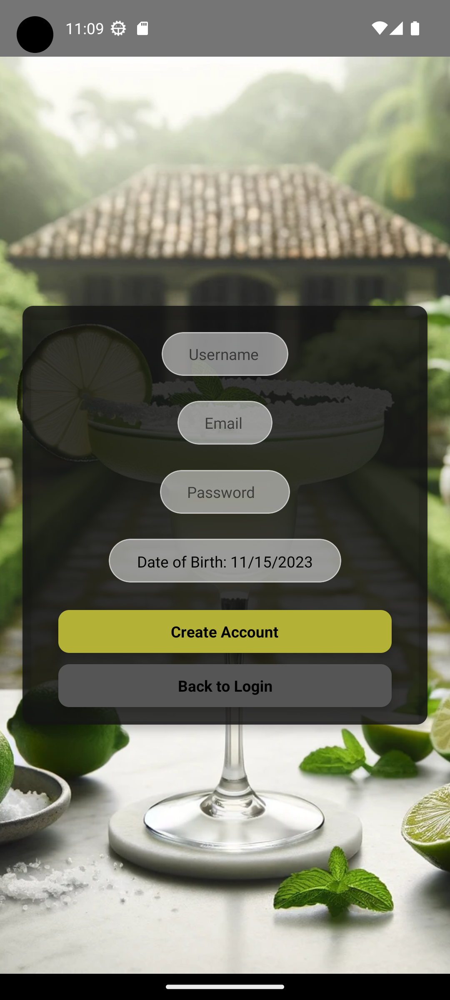
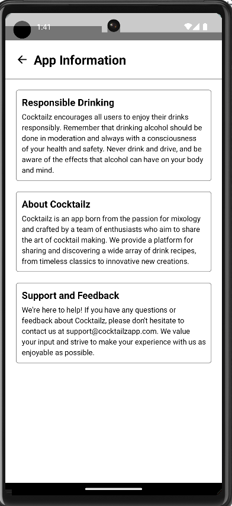

Cocktailz
Dette er et skoleprosjekt hvor vi utviklet en app som lar brukere dele og utforske ulike cocktailoppskrifter. Appen ble bygget med React-rammeverket, med Firebase som backend, og testet ved hjelp av emulatorer for Android-enheter

Hovedfeed for appen, hvor brukere kan se og like cocktailoppskrifter delt av andre.

Innloggingssiden til Cocktailz, hvor brukerne kan logge inn eller registrere seg for en konto.

Brukerprofilen som viser informasjon om brukeren, inkludert deres cocktailoppskrifter og følgere.

Registreringssiden hvor nye brukere kan opprette en konto ved å fylle inn nødvendig informasjon.

Informasjonssiden som gir brukerne innsikt i ansvarlig drikking, appens formål, og hvordan de kan få støtte.